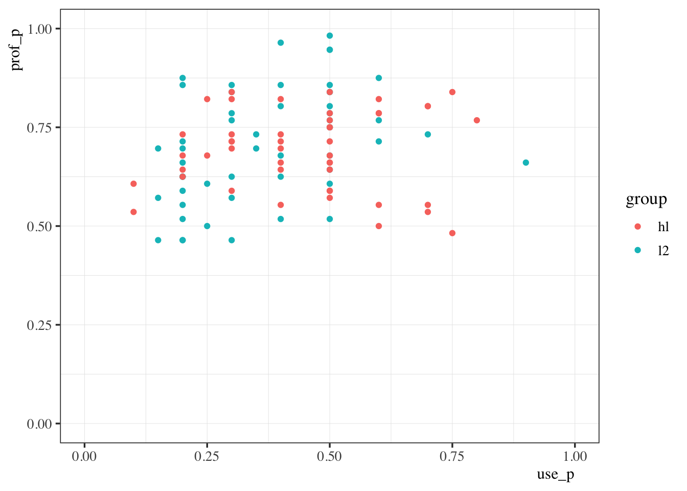
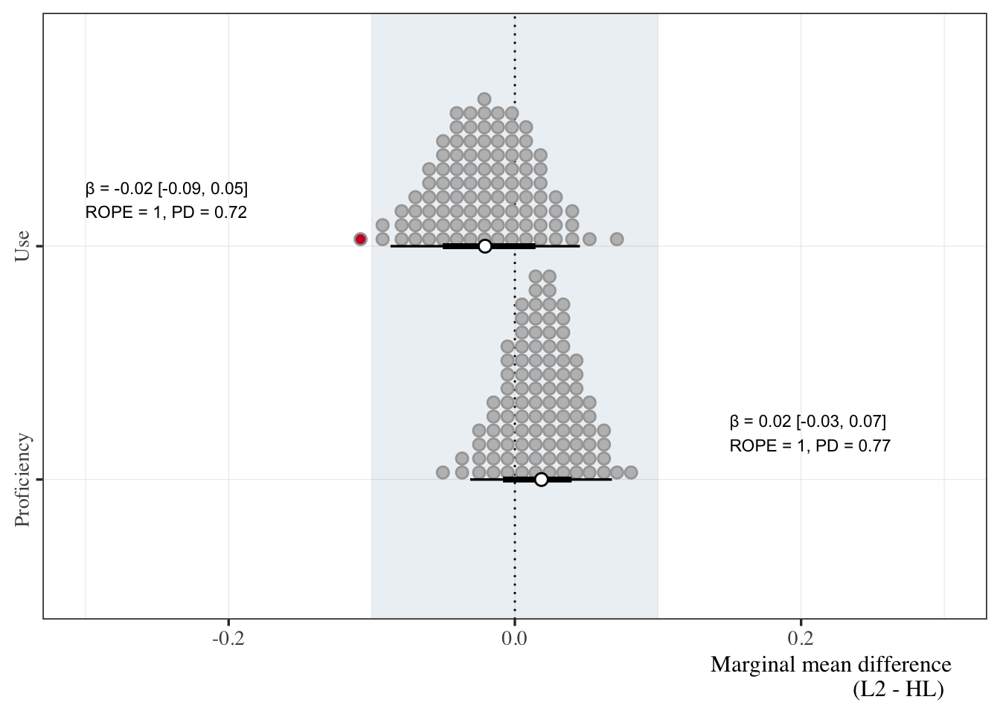

Code
source(here::here("scripts", "00_libraries.R"))
source(here::here("scripts", "01_helpers.R"))EDA - proficiency/use
source(here::here("scripts", "00_libraries.R"))
source(here::here("scripts", "01_helpers.R"))prof_use_temp <- read_xlsx(
here("data", "raw", "HS_L2_used_blc_V2.xlsx")
) %>%
rename(id = Participant, prof = dele, use = `span_week_%`)# Create heritage and L2 groups
# Standardize proficiency
prof_use <- prof_use_temp %>%
mutate(group = case_when(
Type == "advanced_heritage" ~ "hl",
Type == "intermediate_heritage" ~ "hl",
TRUE ~ "l2"),
prof_p = prof / 56,
use_p = use / 100,
prof_perc = prof_p * 100,
use_perc = use_p * 100,
prof_z = (prof_perc - mean(prof_perc)) / sd(prof_perc),
use_z = (use_perc - mean(use_perc)) / sd(use_perc)
)prof_use %>%
ggplot(., aes(x = use_p, y = prof_p, color = group)) +
geom_point() +
coord_cartesian(ylim = c(0,1), xlim = c(0, 1))
It looks pretty evenly distributed, though perhaps there is more variability in the L2 group.
# Check mean (SD) for each TYPE
prof_use %>%
group_by(Type) %>%
summarize(across(c("prof_p", "use_p"),
list(mean = mean, sd = sd)))# A tibble: 4 × 5
Type prof_p_mean prof_p_sd use_p_mean use_p_sd
<chr> <dbl> <dbl> <dbl> <dbl>
1 advanced_heritage 0.776 0.0450 0.474 0.169
2 advanced_l2 0.823 0.0775 0.437 0.134
3 intermediate_heritage 0.609 0.0633 0.421 0.185
4 intermediate_l2 0.591 0.0780 0.307 0.167# Might be able to balance groups by removing intermediate
# heritage with high use
prof_use %>%
filter(Type == "intermediate_heritage") %>%
arrange(desc(use_p))# A tibble: 24 × 11
Type id prof use group prof_p use_p prof_perc use_perc prof_z use_z
<chr> <chr> <dbl> <dbl> <chr> <dbl> <dbl> <dbl> <dbl> <dbl> <dbl>
1 interme… ihs24 27 75 hl 0.482 0.75 48.2 75 -1.76 1.98
2 interme… ihs13 30 70 hl 0.536 0.7 53.6 70 -1.32 1.69
3 interme… ihs18 31 70 hl 0.554 0.7 55.4 70 -1.18 1.69
4 interme… ihs06 28 60 hl 0.5 0.6 50 60 -1.61 1.11
5 interme… ihs27 31 60 hl 0.554 0.6 55.4 60 -1.18 1.11
6 interme… ihs02 37 50 hl 0.661 0.5 66.1 50 -0.307 0.539
7 interme… ihs04 33 50 hl 0.589 0.5 58.9 50 -0.888 0.539
8 interme… ihs09 33 50 hl 0.589 0.5 58.9 50 -0.888 0.539
9 interme… ihs10 37 50 hl 0.661 0.5 66.1 50 -0.307 0.539
10 interme… ihs11 36 50 hl 0.643 0.5 64.3 50 -0.452 0.539
# … with 14 more rows# There are three in the 70+ % range
# We'll start there
prof_use %>%
filter(!(id %in% c("ihs24", "ihs13", "ihs18"))) %>%
group_by(Type) %>%
summarize(across(c("prof_p", "use_p"),
list(mean = mean, sd = sd)))# A tibble: 4 × 5
Type prof_p_mean prof_p_sd use_p_mean use_p_sd
<chr> <dbl> <dbl> <dbl> <dbl>
1 advanced_heritage 0.776 0.0450 0.474 0.169
2 advanced_l2 0.823 0.0775 0.437 0.134
3 intermediate_heritage 0.622 0.0566 0.379 0.155
4 intermediate_l2 0.591 0.0780 0.307 0.167# They are closer now. We can also take out a few of the lower L2 use
prof_use %>%
filter(Type == "intermediate_l2") %>%
arrange(use_p)# A tibble: 27 × 11
Type id prof use group prof_p use_p prof_perc use_perc prof_z use_z
<chr> <chr> <dbl> <dbl> <chr> <dbl> <dbl> <dbl> <dbl> <dbl> <dbl>
1 interm… ies09 32 15 l2 0.571 0.15 57.1 15 -1.03 -1.48
2 interm… ies26 39 15 l2 0.696 0.15 69.6 15 -0.0160 -1.48
3 interm… ies29 26 15 l2 0.464 0.15 46.4 15 -1.90 -1.48
4 interm… ies05 35 20 l2 0.625 0.2 62.5 20 -0.597 -1.19
5 interm… ies06 37 20 l2 0.661 0.2 66.1 20 -0.307 -1.19
6 interm… ies07 35 20 l2 0.625 0.2 62.5 20 -0.597 -1.19
7 interm… ies12 26 20 l2 0.464 0.2 46.4 20 -1.90 -1.19
8 interm… ies13 39 20 l2 0.696 0.2 69.6 20 -0.0160 -1.19
9 interm… ies20 35 20 l2 0.625 0.2 62.5 20 -0.597 -1.19
10 interm… ies21 29 20 l2 0.518 0.2 51.8 20 -1.47 -1.19
# … with 17 more rows# There are three in the 15% range
# We'll start there
prof_use %>%
filter(!(id %in% c("ihs24", "ihs13", "ihs18")),
!(id %in% c("ies09", "ies26", "ies29"))) %>%
group_by(Type) %>%
summarize(across(c("prof_p", "use_p"),
list(mean = mean, sd = sd)))# A tibble: 4 × 5
Type prof_p_mean prof_p_sd use_p_mean use_p_sd
<chr> <dbl> <dbl> <dbl> <dbl>
1 advanced_heritage 0.776 0.0450 0.474 0.169
2 advanced_l2 0.823 0.0775 0.437 0.134
3 intermediate_heritage 0.622 0.0566 0.379 0.155
4 intermediate_l2 0.592 0.0753 0.327 0.167prof_use %>%
filter(Type == "advanced_heritage") %>%
arrange(desc(use_p))# A tibble: 23 × 11
Type id prof use group prof_p use_p prof_perc use_perc prof_z use_z
<chr> <chr> <dbl> <dbl> <chr> <dbl> <dbl> <dbl> <dbl> <dbl> <dbl>
1 advance… ahs12 43 80 hl 0.768 0.8 76.8 80 0.565 2.27
2 advance… ahs03 47 75 hl 0.839 0.75 83.9 75 1.15 1.98
3 advance… ahs15 45 70 hl 0.804 0.7 80.4 70 0.856 1.69
4 advance… ahs23 45 70 hl 0.804 0.7 80.4 70 0.856 1.69
5 advance… ahs04 46 60 hl 0.821 0.6 82.1 60 1.00 1.11
6 advance… ahs11 44 60 hl 0.786 0.6 78.6 60 0.710 1.11
7 advance… ahs16 44 60 hl 0.786 0.6 78.6 60 0.710 1.11
8 advance… ahs02 43 50 hl 0.768 0.5 76.8 50 0.565 0.539
9 advance… ahs06 47 50 hl 0.839 0.5 83.9 50 1.15 0.539
10 advance… ahs10 44 50 hl 0.786 0.5 78.6 50 0.710 0.539
# … with 13 more rowsprof_use %>%
filter(!(id %in% c("ihs24", "ihs13", "ihs18")),
!(id %in% c("ahs12", "ahs03")),
!(id %in% c("ies09", "ies26", "ies29"))) %>%
group_by(group) %>%
summarize(across(c("prof_p", "use_p"),
list(mean = mean, sd = sd)))# A tibble: 2 × 5
group prof_p_mean prof_p_sd use_p_mean use_p_sd
<chr> <dbl> <dbl> <dbl> <dbl>
1 hl 0.698 0.0921 0.412 0.153
2 l2 0.712 0.139 0.384 0.159# IDs to drop
remove <- c(
"ihs24", "ihs13", "ihs18",
"ahs12", "ahs03",
"ies09", "ies26", "ies29"
)
prof_use_final <- prof_use %>%
filter(!(id %in% remove)) %>%
mutate(prof_z = (prof_perc - mean(prof_perc)) / sd(prof_perc),
use_z = (use_perc - mean(use_perc)) / sd(use_perc))We now have candidates to remove. We will do a few formal tests to look at equivalence in proficiency and use with and without them.
# Fit models will all participants
model_formula <- bf(
prop ~ group,
phi ~ group
)
prof_with <- brm(
formula = model_formula,
family = Beta(),
data = mutate(prof_use, prop = prof / 56),
file = here("models", "eda_prof_use", "prof_with")
)
use_with <- brm(
formula = model_formula,
family = Beta(),
data = mutate(prof_use, prop = use / 100),
file = here("models", "eda_prof_use", "use_with")
)
prof_wo <- brm(
formula = model_formula,
family = Beta(),
data = mutate(prof_use_final, prop = prof / 56),
file = here("models", "eda_prof_use", "prof_wo")
)
use_wo <- brm(
formula = model_formula,
family = Beta(),
data = mutate(prof_use_final, prop = use / 100),
file = here("models", "eda_prof_use", "use_wo")
)
prof_contrast <- prof_wo %>%
emmeans(spec = ~ group,
at = list(group = c("l2", "hl")),
epred = TRUE) %>%
contrast(method = "pairwise") %>%
gather_emmeans_draws() %>%
mutate(metric = "prof")
use_contrast <- use_wo %>%
emmeans(spec = ~ group,
at = list(group = c("l2", "hl")),
epred = TRUE) %>%
contrast(method = "pairwise") %>%
gather_emmeans_draws() %>%
mutate(metric = "use")
use_prof_desc <- bind_rows(
bind_cols(x = 0.15, y = 1.2,
metric = "Proficiency",
median_hdi(prof_contrast, .value),
ROPE = rope(prof_contrast$.value, ci_method = "HDI")$ROPE_Percentage,
PD = p_direction(prof_contrast$.value)[[1]]
),
bind_cols(x = -0.3, y = 2.2,
metric = "Use",
median_hdi(use_contrast, .value),
ROPE = rope(use_contrast$.value, ci_method = "HDI")$ROPE_Percentage,
PD = p_direction(use_contrast$.value)[[1]]
)
) %>%
mutate(across(c(".value", ".lower", ".upper", "PD"),
~ round(.x, digits = 2))) %>%
transmute(x, y, metric, contrast,
out = glue("β = {.value} [{.lower}, {.upper}]\nROPE = {ROPE}, PD = {PD}"))
bind_rows(prof_contrast, use_contrast) %>%
mutate(ylab = if_else(metric == "use", "Use", "Proficiency")) %>%
ggplot(., aes(x = .value, y = ylab, fill = stat(abs(x) > 0.1))) +
geom_tile(data = tibble(
ylab = "Proficiency", value = 0, lower = -0.1, upper = 0.1
),
aes(x = value, width = lower - upper),
alpha = 0.1, height = Inf, fill = "#31688EFF") +
geom_vline(xintercept = 0, lty = 3, size = 0.5) +
stat_dotsinterval(quantiles = 100, point_interval = "median_hdi",
show.legend = F, pch = 21, point_fill = "white") +
scale_fill_manual(values = c("grey", "#cc0033")) +
coord_cartesian(xlim = c(-0.3, 0.3)) +
geom_text(data = use_prof_desc, aes(x = x, y = y, label = out),
hjust = 0, size = 3) +
labs(y = NULL, x = "Marginal mean difference\n(L2 - HL)") +
theme(axis.text.y = element_text(angle = 90, hjust = 0.5))
n_groups <- prof_use_final %>%
group_by(group) %>%
summarize(n = n_distinct(id))
tab_prof_use_desc <- prof_use_final %>%
group_by(group) %>%
summarize(across(c("prof_p", "use_p"),
list(mean = mean, sd = sd))) %>%
mutate_if(is.numeric, specify_decimal, k = 2) %>%
left_join(., n_groups, by = "group") %>%
mutate(Proficiency = glue("{prof_p_mean} [{prof_p_sd}]"),
Use = glue("{use_p_mean} [{use_p_sd}]")) %>%
transmute(Group = group, n, Proficiency, Use) %>%
mutate(Group = str_to_upper(Group)) %>%
write_csv(here("tables", "tab_prof_use_desc.csv"))
tab_prof_use_desc %>%
knitr::kable(format = "pandoc",
align = c("l", "r", "r", "r"),
caption = "Average use and proficiency for L2 and heritage learners.")| Group | n | Proficiency | Use |
|---|---|---|---|
| HL | 42 | 0.70 [0.09] | 0.41 [0.15] |
| L2 | 50 | 0.71 [0.14] | 0.38 [0.16] |
tab_use_prof_desc_mod <- use_prof_desc %>%
select(metric:out) %>%
separate(out, into = c("Estimate", "ROPE"), sep = "\n") %>%
separate(ROPE, into = c("ROPE", "PD"), sep = ",") %>%
mutate(contrast = str_to_upper(contrast),
Estimate = str_remove(Estimate, "β = "),
Estimate = str_replace_all(Estimate, "-", "\U2212"),
PD = str_remove(PD, "PD = "),
ROPE = str_remove(ROPE, "ROPE = "),
PD = str_remove(PD, " ")) %>%
select(Metric = metric, Contrast = contrast, Estimate, ROPE, PD) %>%
write_csv(here("tables", "tab_prof_use_mod.csv"))
tab_use_prof_desc_mod %>%
knitr::kable(format = "pandoc",
align = c("l", "l", "r", "r", "r"),
caption = "Marginal mean difference beween L2 and heritage leareners for use and proficiency.")| Metric | Contrast | Estimate | ROPE | PD |
|---|---|---|---|---|
| Proficiency | L2 - HL | 0.02 [−0.03, 0.07] | 1 | 0.77 |
| Use | L2 - HL | −0.02 [−0.09, 0.05] | 1 | 0.72 |
prof_use %>%
mutate(remove = if_else(id %in% remove, 1, 0)) %>%
write_csv(here("data", "tidy", "prof_use.csv"))